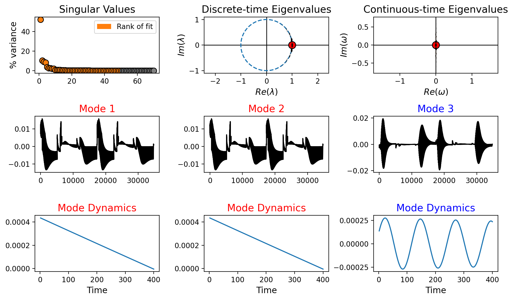
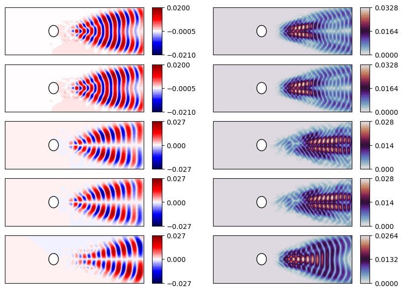
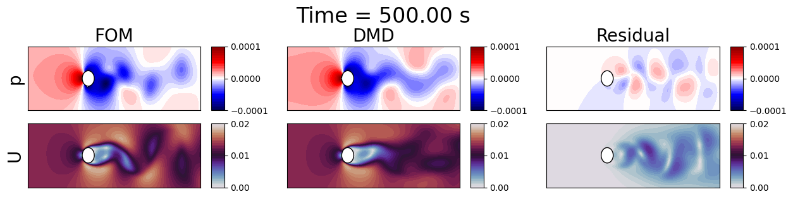
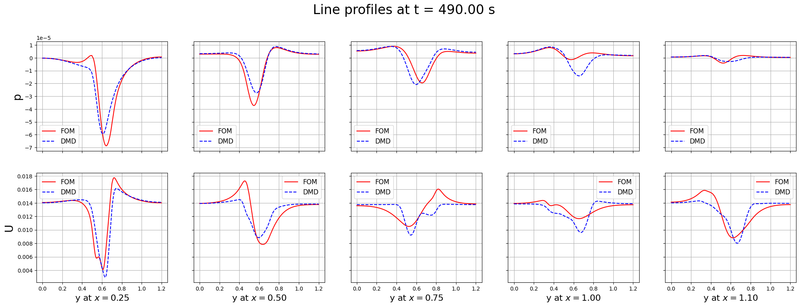
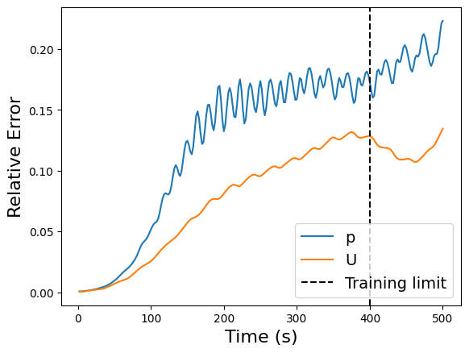
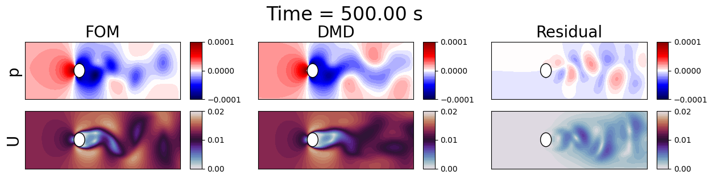
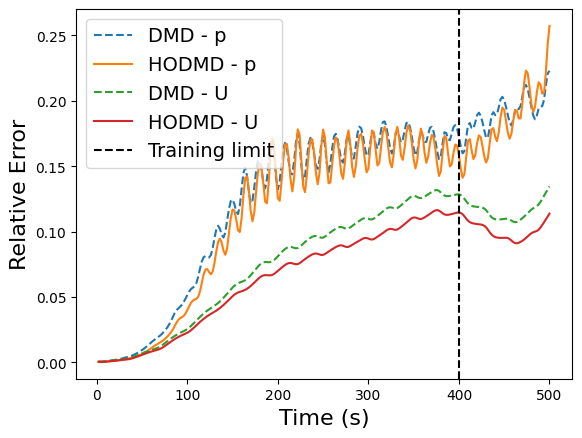
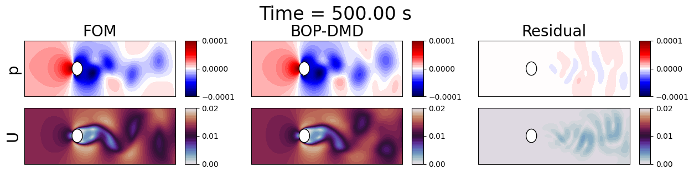
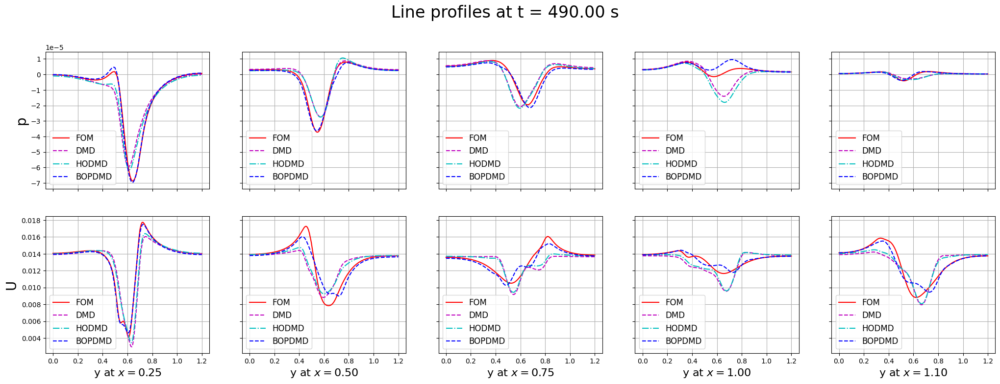
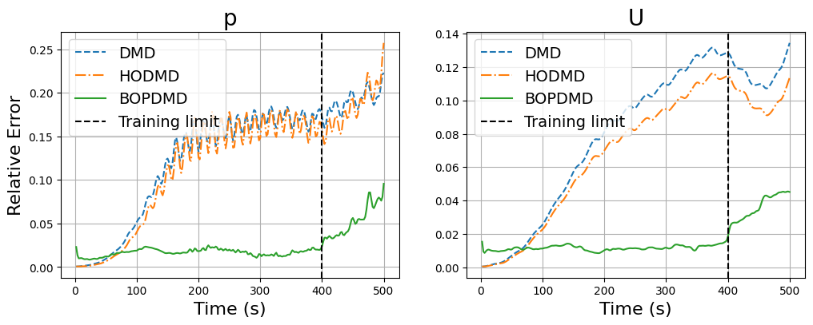

Integration of pyforce with pyDMD for Dynamic Mode Decomposition (DMD)
This notebook demostrates how to use pyforce in combination with the pyDMD library to perform Dynamic Mode Decomposition (DMD) analysis on time-dependent data. DMD is a powerful technique for extracting dynamic features from complex systems and it can be combined with pyforce to efficient compression and importing of datasets.
In order to run this notebook, please make sure you have pyDMD installed in your Python environment. You can install it via pip:
pip install pydmd
The data for this tutorial comes from an OpenFOAM tutorial (com version 2012) for pimpleFoam in laminar condition, called cylinder2D.
As mentioned in the basic tutorials, the pyforce package comes with the ReadFromOF class, which allows users to easily import simulation data from OpenFOAM cases. This class must be initialized with the path to the OpenFOAM case folder.
[1]:
from pyforce.tools.write_read import ReadFromOF
import warnings
warnings.filterwarnings("ignore", category=RuntimeWarning)
io_data = ReadFromOF('../Datasets/LaminarFlowCyl_OF2012/',
skip_zero_time=True # optional
)
# Import the mesh information
grid = io_data.mesh()
The variables to import are the pressure (scalar field) and the velocity (vector field). The snapshots can be loaded using pyvista (default) or fluidfoam libraries: the latter is more efficient for large datasets, but it only supports cell data. The method import_field can be used to load the data from the OpenFOAM case and returns the snapshots as a FunctionsList object, including a vector with the time instances (from the OpenFOAM directories).
[2]:
import numpy as np
var_names = ['p', 'U']
dataset = dict()
for field in var_names:
print('Importing '+field+f' using pyvista')
dataset[field], times = io_data.import_field(field,
import_mode='pyvista', verbose=False # optional
)
Importing p using pyvista
Importing U using pyvista
Let us extract the first 80% of the snapshots as training data for the DMD models.
[3]:
Nt = len(dataset[var_names[0]])
assert all(len(dataset[var]) == Nt for var in var_names), "Mismatch in number of snapshots among variables."
train_cut = int(0.80 * Nt)
train_snaps = {var: dataset[var][:train_cut] for var in var_names}
train_times = times[:train_cut]
print(f'Training on {train_cut} snapshots out of {Nt} total snapshots.')
Training on 200 snapshots out of 250 total snapshots.
Let us define the plotter class.
[4]:
from matplotlib import patches, cm, pyplot as plt
from scipy.interpolate import griddata
class PlotFlowCyl:
def __init__(self, grid, center = (0,0), radius = 0.05, gdim=3):
self.nodes = grid.cell_centers().points
self.width = np.max(self.nodes[:,0]) - np.min(self.nodes[:,0])
self.height = np.max(self.nodes[:,1]) - np.min(self.nodes[:,1])
self.aspect = self.height / self.width
self.center = center
self.radius = radius
self.gdim = gdim
def create_streamlines(self, velocity):
x_grid = np.linspace(self.nodes[:,0].min(), self.nodes[:,0].max(), 50)
y_grid = np.linspace(self.nodes[:,1].min(), self.nodes[:,1].max(), 50)
X, Y = np.meshgrid(x_grid, y_grid)
U_interp = griddata(self.nodes[:, :2], velocity[:,0], (X, Y), method='linear')
V_interp = griddata(self.nodes[:, :2], velocity[:,1], (X, Y), method='linear')
# Mask inside the circle
mask = (X - self.center[0])**2 + (Y - self.center[1])**2 <= self.radius**2
U_interp[mask] = np.nan
V_interp[mask] = np.nan
return X, Y, U_interp, V_interp
def create_circle(self, ls=1):
circle = patches.Circle(self.center, self.radius, edgecolor='black', facecolor='white', linewidth=ls)
return circle
def plot_contour(self, ax, snap, cmap = cm.RdYlBu_r, levels=40, show_ticks=False,
streamline_plot = False, density = 2, linewidth=0.75,
ylim = None, xlim = None):
if snap.shape[0] == self.gdim*self.nodes.shape[0]:
_vec = snap.reshape(-1, self.gdim)
snap = np.linalg.norm(_vec, axis=1)
plot = ax.tricontourf(self.nodes[:,0], self.nodes[:,1], snap, cmap=cmap, levels=levels)
ax.add_patch(self.create_circle())
if not show_ticks:
ax.set_xticks([])
ax.set_yticks([])
if streamline_plot:
ax.streamplot(*self.create_streamlines(_vec),
color='k', density=density, linewidth=linewidth, arrowstyle='->')
if ylim is not None:
ax.set_ylim(ylim)
if xlim is not None:
ax.set_xlim(xlim)
return plot
plotter = PlotFlowCyl(grid, radius=0.06)
cmaps = {
'p': cm.seismic,
'U': cm.twilight,
'vorticity': cm.vanimo
}
Let us generate the error dictionary to store the errors between FOM and DMD results.
[5]:
errors = dict()
Classic Dynamic Mode Decomposition (DMD) with pyDMD
The Dynamic Mode Decomposition (DMD) is a data-driven technique used to analyze the dynamics of complex systems. Given a set of time-dependent snapshots \(\mathbb{X} = [x_1, x_2, \ldots, x_{N_t}]\in\mathbb{R}^{\mathcal{N}_h \times N_t}\), where each snapshot \(x_i\) represents the state of the system at time \(t_i\), DMD seeks to find a linear operator \(\mathbf{A}\) such that:
for \(i = 1, 2, \ldots, N_t - 1\).
The snapshots have been imported as FunctionsList objects, which can be easily converted to NumPy arrays for use with pyDMD. The library requires the snapshots to be organized in a 2D array where each column represents a snapshot at a specific time instance (as standard pyforce format).
[6]:
from pydmd import DMD
dmd_models = dict()
for field in var_names:
print(f'Fitting DMD model for field: {field}')
X = train_snaps[field].return_matrix() # Shape: (Nh, 0.8 * Nt)
# Create and fit DMD model
dmd_models[field] = DMD(svd_rank=50)
dmd_models[field].fit(X)
# Define original times
dmd_models[field].original_time['t0'] = train_times[0]
dmd_models[field].original_time['tend'] = train_times[-1]
dmd_models[field].original_time['dt'] = train_times[1] - train_times[0]
Fitting DMD model for field: p
/Users/sriva/miniconda3/envs/ml/lib/python3.10/site-packages/pydmd/snapshots.py:73: UserWarning: Input data condition number 2861167.0. Consider preprocessing data, passing in augmented data
matrix, or regularization methods.
warnings.warn(
Fitting DMD model for field: U
/Users/sriva/miniconda3/envs/ml/lib/python3.10/site-packages/pydmd/snapshots.py:73: UserWarning: Input data condition number 52116544.0. Consider preprocessing data, passing in augmented data
matrix, or regularization methods.
warnings.warn(
Let us plot the summary for the DMD model for the pressure field.
[7]:
from pydmd.plotter import plot_summary
plot_summary(dmd_models[var_names[0]], figsize=(10,6), max_sval_plot = 70)

Let us plot the modes
[8]:
nrows = 5
ncols = len(var_names)
ylim = (-0.25, 0.25)
aspect_ratio = (ylim[1] - ylim[0]) / plotter.width
fig, axes = plt.subplots(nrows=nrows, ncols=ncols, figsize=(5 * ncols, 5 * nrows * aspect_ratio))
for field_i, field in enumerate(var_names):
for rr in range(nrows):
c = plotter.plot_contour(axes[rr, field_i], dmd_models[field].modes[:, rr].real,
levels = 40, cmap=cmaps[field], ylim = ylim)
cbar = fig.colorbar(c, ax=axes[rr, field_i], aspect = 5)
cbar.ax.set_yticks(np.linspace(c.get_clim()[0], c.get_clim()[1], num=3))

Let us predict future states using the trained DMD models and visualize the results.
[9]:
from IPython.display import clear_output as clc
nrows = len(var_names)
ncols = 3
ylim = (-0.25, 0.25)
aspect_ratio = (ylim[1] - ylim[0]) / plotter.width
levels = {
'p': np.linspace(-1e-4, 1e-4, 40),
'U': np.linspace(0, 0.02, 40)
}
for tt in range(train_cut+4, Nt, 5):
fig, axes = plt.subplots(nrows=nrows, ncols=ncols, figsize=(5 * ncols, 5 * nrows * aspect_ratio))
for field_i, field in enumerate(var_names):
dmd_models[field].dmd_time['t0'] = times[0]
dmd_models[field].dmd_time['tend'] = times[tt]
dmd_models[field].dmd_time['dt'] = times[1] - times[0]
# Get the reconstructed snapshots
recon = dmd_models[field].reconstructed_data.real[:, tt]
# Original snapshot
fom = dataset[field][tt]
# Compute residual
# resid = np.abs(fom - recon)
resid = fom - recon
# Plot
c = plotter.plot_contour(axes[field_i, 0], fom, cmap=cmaps[field], levels=levels[field], ylim=ylim)
cbar = fig.colorbar(c, ax=axes[field_i, 0], aspect = 5)
cbar.ax.set_yticks(np.linspace(c.get_clim()[0], c.get_clim()[1], num=3))
c = plotter.plot_contour(axes[field_i, 1], recon, cmap=cmaps[field], levels=levels[field], ylim=ylim)
cbar = fig.colorbar(c, ax=axes[field_i, 1], aspect = 5)
cbar.ax.set_yticks(np.linspace(c.get_clim()[0], c.get_clim()[1], num=3))
c = plotter.plot_contour(axes[field_i, 2], resid, cmap=cmaps[field], levels=levels[field], ylim=ylim)
cbar = fig.colorbar(c, ax=axes[field_i, 2], aspect = 5)
cbar.ax.set_yticks(np.linspace(c.get_clim()[0], c.get_clim()[1], num=3))
axes[field_i, 0].set_ylabel(f'{field}', fontsize=20)
axes[0, 0].set_title(f'FOM', fontsize=20)
axes[0, 1].set_title(f'DMD', fontsize=20)
axes[0, 2].set_title(f'Residual', fontsize=20)
fig.suptitle(f'Time = {times[tt]:.2f} s', fontsize=24, y=1.1)
plt.show()
clc(wait=True)
plt.close()

Let us plot some line profiles to compare the FOM and DMD results.
[10]:
for tt in range(train_cut+4, Nt, 10):
lines_x = [0.25, 0.5, 0.75, 1, 1.1]
nrows = len(var_names)
ncols = len(lines_x)
fig, axs = plt.subplots(nrows=nrows, ncols=ncols, figsize=(5 * ncols, 4 * nrows), sharey='row', sharex=True)
for field_i, field in enumerate(var_names):
for xx, _linex in enumerate(lines_x):
grid.clear_data()
grid['fom'] = np.linalg.norm(dataset[field][tt].reshape(-1, 3), axis=1) if field == 'U' else dataset[field][tt]
grid['dmd'] = np.linalg.norm(dmd_models[field].reconstructed_data.real[:, tt].reshape(-1, 3), axis=1) if field == 'U' else dmd_models[field].reconstructed_data.real[:, tt]
line_grid = grid.cell_data_to_point_data().sample_over_line(pointa = (_linex, -0.6, 0), pointb=(_linex, 0.6, 0), resolution=500)
axs[field_i, xx].plot(line_grid['Distance'], line_grid['fom'], label='FOM', color='r')
axs[field_i, xx].plot(line_grid['Distance'], line_grid['dmd'], label='DMD', color='b', linestyle='--')
axs[field_i, xx].grid(True)
axs[field_i, xx].legend(fontsize=12)
if xx == 0:
axs[field_i, xx].set_ylabel(f'{field}', fontsize=20)
if field_i == nrows - 1:
axs[field_i, xx].set_xlabel(f'y at $x = {_linex:.2f}$', fontsize=16)
fig.suptitle(f'Line profiles at t = {times[tt]:.2f} s', fontsize=24, y=1.00)
plt.show()
clc(wait=True)
plt.close()

Some discrepancies are observed between the FOM and DMD results, this is because the standard DMD is not able to entirely capture complex dynamics, unless a large number of modes is used. Let us measure the error in time between the FOM and DMD results.
[11]:
errors['DMD'] = np.zeros((len(var_names), Nt))
for ii, field in enumerate(var_names):
fom = dataset[field].return_matrix()
recon = dmd_models[field].reconstructed_data.real
error = np.linalg.norm(fom - recon, axis=0) / np.linalg.norm(fom, axis=0)
errors['DMD'][ii] = error
plt.plot(times, error, label=field)
plt.axvline(x=train_times[-1], color='k', linestyle='--', label='Training limit')
plt.xlabel('Time (s)', fontsize=16)
plt.ylabel('Relative Error', fontsize=16)
plt.legend(fontsize=14)
[11]:
<matplotlib.legend.Legend at 0x37f1e25f0>

Hankel DMD (HODMD) with pyDMD
The Higher-Order Dynamic Mode Decomposition (HODMD) is an extension of the standard DMD technique that aims to improve the accuracy and robustness of the decomposition by considering higher-order correlations in the data. HODMD is particularly useful for systems with complex dynamics, where standard DMD may struggle to capture the underlying behavior.
[12]:
from pydmd import HODMD
hodmd_models = dict()
delay = 5
for field in var_names:
print(f'Fitting HODMD model for field: {field}')
X = train_snaps[field].return_matrix() # Shape: (Nh, 0.8 * Nt)
# Create and fit HODMD model
hodmd_models[field] = HODMD(svd_rank=50, d=delay)
hodmd_models[field].fit(X)
# Define original times
hodmd_models[field].original_time['t0'] = train_times[0]
hodmd_models[field].original_time['tend'] = train_times[-1]+1e-12
hodmd_models[field].original_time['dt'] = train_times[1] - train_times[0]
# Define times
hodmd_models[field].dmd_time['t0'] = times[0]
hodmd_models[field].dmd_time['dt'] = times[1] - times[0]
hodmd_models[field].dmd_time['tend'] = train_times[-1]
Fitting HODMD model for field: p
/Users/sriva/miniconda3/envs/ml/lib/python3.10/site-packages/pydmd/snapshots.py:73: UserWarning: Input data condition number 6412557.5. Consider preprocessing data, passing in augmented data
matrix, or regularization methods.
warnings.warn(
Fitting HODMD model for field: U
/Users/sriva/miniconda3/envs/ml/lib/python3.10/site-packages/pydmd/snapshots.py:73: UserWarning: Input data condition number 786325568.0. Consider preprocessing data, passing in augmented data
matrix, or regularization methods.
warnings.warn(
Let us predict future states using the trained DMD models and visualize the results.
[13]:
from IPython.display import clear_output as clc
nrows = len(var_names)
ncols = 3
ylim = (-0.25, 0.25)
aspect_ratio = (ylim[1] - ylim[0]) / plotter.width
levels = {
'p': np.linspace(-1e-4, 1e-4, 40),
'U': np.linspace(0, 0.02, 40)
}
for tt in range(train_cut+4, Nt, 5):
fig, axes = plt.subplots(nrows=nrows, ncols=ncols, figsize=(5 * ncols, 5 * nrows * aspect_ratio))
for field_i, field in enumerate(var_names):
hodmd_models[field].dmd_time['tend'] = times[-1] + 2 * (times[1] - times[0])
# Get the reconstructed snapshots
recon = hodmd_models[field].reconstructed_data.real[:, tt]
# Original snapshot
fom = dataset[field][tt]
# Compute residual
# resid = np.abs(fom - recon)
resid = fom - recon
# Plot
c = plotter.plot_contour(axes[field_i, 0], fom, cmap=cmaps[field], levels=levels[field], ylim=ylim)
cbar = fig.colorbar(c, ax=axes[field_i, 0], aspect = 5)
cbar.ax.set_yticks(np.linspace(c.get_clim()[0], c.get_clim()[1], num=3))
c = plotter.plot_contour(axes[field_i, 1], recon, cmap=cmaps[field], levels=levels[field], ylim=ylim)
cbar = fig.colorbar(c, ax=axes[field_i, 1], aspect = 5)
cbar.ax.set_yticks(np.linspace(c.get_clim()[0], c.get_clim()[1], num=3))
c = plotter.plot_contour(axes[field_i, 2], resid, cmap=cmaps[field], levels=levels[field], ylim=ylim)
cbar = fig.colorbar(c, ax=axes[field_i, 2], aspect = 5)
cbar.ax.set_yticks(np.linspace(c.get_clim()[0], c.get_clim()[1], num=3))
axes[field_i, 0].set_ylabel(f'{field}', fontsize=20)
axes[0, 0].set_title(f'FOM', fontsize=20)
axes[0, 1].set_title(f'DMD', fontsize=20)
axes[0, 2].set_title(f'Residual', fontsize=20)
fig.suptitle(f'Time = {times[tt]:.2f} s', fontsize=24, y=1.1)
plt.show()
clc(wait=True)
plt.close()

Let us plot the errors in time between the FOM and HODMD results, including the previous DMD results for comparison.
[33]:
errors['HODMD'] = np.zeros((len(var_names), Nt))
for ii, field in enumerate(var_names):
fom = dataset[field].return_matrix()
recon = hodmd_models[field].reconstructed_data.real
error = np.linalg.norm(fom - recon, axis=0) / np.linalg.norm(fom, axis=0)
errors['HODMD'][ii] = error
plt.plot(times, errors['DMD'][ii], '--', label='DMD - ' + field)
plt.plot(times, errors['HODMD'][ii], label='HODMD - ' + field)
plt.axvline(x=train_times[-1], color='k', linestyle='--', label='Training limit')
plt.xlabel('Time (s)', fontsize=16)
plt.ylabel('Relative Error', fontsize=16)
plt.legend(fontsize=14)
[33]:
<matplotlib.legend.Legend at 0x1764974f0>

Bagging-Optimized DMD (BOPDMD) with pyDMD
The Bagging-Optimized Dynamic Mode Decomposition (BOPDMD) is an advanced variant of the DMD technique that computes the eigenvalues and modes through an optimization approach, including a bagging strategy to enhance robustness and accuracy with noisy data.
[34]:
from pydmd import BOPDMD
bopdmd_models = dict()
for field in var_names:
print(f'Fitting BOPDMD model for field: {field}')
X = train_snaps[field].return_matrix() # Shape: (Nh, 0.8 * Nt)
# Create and fit BOPDMD model
bopdmd_models[field] = BOPDMD(svd_rank = 30, eig_constraints={'stable', 'conjugate_pairs'})
bopdmd_models[field].fit(X, train_times)
Fitting BOPDMD model for field: p
/Users/sriva/miniconda3/envs/ml/lib/python3.10/site-packages/pydmd/bopdmd.py:973: UserWarning: Initial trial of Optimized DMD failed to converge. Consider re-adjusting your variable projection parameters with the varpro_opts_dict and consider setting verbose=True.
warnings.warn(msg)
Fitting BOPDMD model for field: U
Let us predict future states using the trained DMD models and visualize the results.
[35]:
from IPython.display import clear_output as clc
nrows = len(var_names)
ncols = 3
ylim = (-0.25, 0.25)
aspect_ratio = (ylim[1] - ylim[0]) / plotter.width
levels = {
'p': np.linspace(-1e-4, 1e-4, 40),
'U': np.linspace(0, 0.02, 40)
}
for tt in range(train_cut+4, Nt, 5):
fig, axes = plt.subplots(nrows=nrows, ncols=ncols, figsize=(5 * ncols, 5 * nrows * aspect_ratio))
for field_i, field in enumerate(var_names):
# Get the reconstructed snapshots
recon = bopdmd_models[field].forecast(times[tt]).real.flatten()
# Original snapshot
fom = dataset[field][tt]
# Compute residual
# resid = np.abs(fom - recon)
resid = fom - recon
# Plot
c = plotter.plot_contour(axes[field_i, 0], fom, cmap=cmaps[field], levels=levels[field], ylim=ylim)
cbar = fig.colorbar(c, ax=axes[field_i, 0], aspect = 5)
cbar.ax.set_yticks(np.linspace(c.get_clim()[0], c.get_clim()[1], num=3))
c = plotter.plot_contour(axes[field_i, 1], recon, cmap=cmaps[field], levels=levels[field], ylim=ylim)
cbar = fig.colorbar(c, ax=axes[field_i, 1], aspect = 5)
cbar.ax.set_yticks(np.linspace(c.get_clim()[0], c.get_clim()[1], num=3))
c = plotter.plot_contour(axes[field_i, 2], resid, cmap=cmaps[field], levels=levels[field], ylim=ylim)
cbar = fig.colorbar(c, ax=axes[field_i, 2], aspect = 5)
cbar.ax.set_yticks(np.linspace(c.get_clim()[0], c.get_clim()[1], num=3))
axes[field_i, 0].set_ylabel(f'{field}', fontsize=20)
axes[0, 0].set_title(f'FOM', fontsize=20)
axes[0, 1].set_title(f'BOP-DMD', fontsize=20)
axes[0, 2].set_title(f'Residual', fontsize=20)
fig.suptitle(f'Time = {times[tt]:.2f} s', fontsize=24, y=1.1)
plt.show()
clc(wait=True)
plt.close()

Let us compare the line profiles
[36]:
for tt in range(train_cut+4, Nt, 10):
lines_x = [0.25, 0.5, 0.75, 1, 1.1]
nrows = len(var_names)
ncols = len(lines_x)
fig, axs = plt.subplots(nrows=nrows, ncols=ncols, figsize=(5 * ncols, 4 * nrows), sharey='row', sharex=True)
for field_i, field in enumerate(var_names):
for xx, _linex in enumerate(lines_x):
grid.clear_data()
grid['fom'] = np.linalg.norm(dataset[field][tt].reshape(-1, 3), axis=1) if field == 'U' else dataset[field][tt]
grid['dmd'] = np.linalg.norm(dmd_models[field].reconstructed_data.real[:, tt].reshape(-1, 3), axis=1) if field == 'U' else dmd_models[field].reconstructed_data.real[:, tt]
grid['hodmd'] = np.linalg.norm(hodmd_models[field].reconstructed_data.real[:, tt].reshape(-1, 3), axis=1) if field == 'U' else hodmd_models[field].reconstructed_data.real[:, tt]
grid['bopdmd'] = np.linalg.norm(bopdmd_models[field].forecast(times).real[:, tt].reshape(-1, 3), axis=1) if field == 'U' else bopdmd_models[field].forecast(times).real[:, tt]
line_grid = grid.cell_data_to_point_data().sample_over_line(pointa = (_linex, -0.6, 0), pointb=(_linex, 0.6, 0), resolution=500)
axs[field_i, xx].plot(line_grid['Distance'], line_grid['fom'], label='FOM', color='r')
axs[field_i, xx].plot(line_grid['Distance'], line_grid['dmd'], label='DMD', color='m', linestyle='--')
axs[field_i, xx].plot(line_grid['Distance'], line_grid['hodmd'], label='HODMD', color='c', linestyle='-.')
axs[field_i, xx].plot(line_grid['Distance'], line_grid['bopdmd'], label='BOPDMD', color='b', linestyle='--')
axs[field_i, xx].grid(True)
axs[field_i, xx].legend(fontsize=12)
if xx == 0:
axs[field_i, xx].set_ylabel(f'{field}', fontsize=20)
if field_i == nrows - 1:
axs[field_i, xx].set_xlabel(f'y at $x = {_linex:.2f}$', fontsize=16)
fig.suptitle(f'Line profiles at t = {times[tt]:.2f} s', fontsize=24, y=1.00)
plt.show()
clc(wait=True)
plt.close()

The reconstruction and prediction is much more accurate than the previous DMD techniques. Let us plot the errors in time between the FOM and BOPDMD results, including the previous DMD and HODMD results for comparison.
[37]:
fig, axs = plt.subplots(1, 2, figsize=(12, 4))
errors['BOPDMD'] = np.zeros((len(var_names), Nt))
for ii, field in enumerate(var_names):
fom = dataset[field].return_matrix()
recon = bopdmd_models[field].forecast(times).real
error = np.linalg.norm(fom - recon, axis=0) / np.linalg.norm(fom, axis=0)
errors['BOPDMD'][ii] = error
axs[ii].plot(times, errors['DMD'][ii], '--', label='DMD')
axs[ii].plot(times, errors['HODMD'][ii], '-.', label='HODMD')
axs[ii].plot(times, errors['BOPDMD'][ii], label='BOPDMD')
axs[ii].axvline(x=train_times[-1], color='k', linestyle='--', label='Training limit')
axs[ii].set_xlabel('Time (s)', fontsize=16)
axs[ii].legend(fontsize=14)
axs[ii].grid(True)
axs[ii].set_title(f'{field}', fontsize=20)
axs[0].set_ylabel('Relative Error', fontsize=16)
[37]:
Text(0, 0.5, 'Relative Error')
